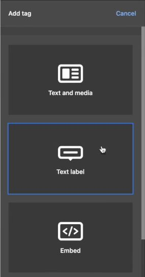
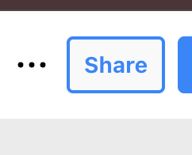
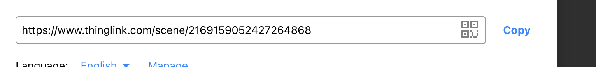

Tag your hangout map
Use the map you saved in Lesson 1. Add tags that explain your areas.
Get into ThingLink
- Choose Login with Google and use your school account.
- In ThingLink, click Use invite code.
- Enter your teacher’s code and click Join. Already in our class? Continue below.
If asked for an account type, choose Student. If you cannot get in, ask your teacher.
Start with your saved map
- Open Lesson 1: Design Your Own Hangout.
- Open your submission and click the photo’s file name or download button.
- Find the image in Downloads. Upload it to your class ThingLink account.
Student examples
These maps are from last year’s superhero project. Look at how students drew their spaces and added tags. This year, design your own hangout.
Open student map 1 · Open student map 2
Tag the map
- Add a tag to at least three different zones on your map.
- Name each zone in its tag. Explain what someone can do there.
- Use at least two kinds of content across your tags: text, image, audio, or video. For example, text + image.
- Ask a partner to try every tag. Improve one detail, then test again.
Two kinds across all your tags. Each tag does not need two kinds. Your map photo is the background and does not count as a picture inside a tag.
Which tag button should I use?
Text & media: combine text, pictures, audio, or video. You can use this button for all three zones.
Text label: short text. Embed: a video or content from another page.

Word bank: zone = part of a place; tag = information you click to open; content = text, image, audio, or video.
Partner feedback: I understood ___. I wanted to know ___.
Tag starter: This area is for ___. You can ___ here.
Ready to turn in?
Your map has a name and at least three labeled zones. Your tags work and use at least two kinds of content. You tested the map with a partner and improved one detail.
Turn in your link
In your ThingLink map:
- Click Share.

- Choose Share link.

- Click Copy. Copy your own link, not the example in the picture.

Return to this Canvas assignment. Click Start Assignment (or New Attempt). Paste the link into Website URL, then click Submit Assignment.
Submit the link, not a screenshot or file. Check that your partner can open it. Use the sharing setting your teacher gives you.
Leave out door codes, private schedules, and real restricted or security areas. Ask your teacher before including anyone’s photo, voice, or video. Credit media you did not make. Add image descriptions and captions or a transcript for audio/video.
ThingLink tutorial
Agrega etiquetas a tu mapa
Usa el mapa que guardaste en la Lección 1. Agrega etiquetas que expliquen tus áreas.
Entra a ThingLink
- Elige Login with Google e inicia sesión con tu cuenta escolar.
- En ThingLink, haz clic en Use invite code.
- Escribe el código de tu maestro y haz clic en Join. Si ya estás en nuestra clase, continúa.
Si te pide un tipo de cuenta, elige Student. Si no puedes entrar, pide ayuda al maestro.
Empieza con tu mapa guardado
- Abre la Lección 1: Diseña tu lugar para pasar el rato.
- Abre tu entrega y haz clic en el nombre del archivo o en el botón de descarga.
- Busca la imagen en Descargas. Súbela a tu cuenta de ThingLink de la clase.
Ejemplos de estudiantes
Estos mapas son del proyecto de superhéroes del año pasado. Observa los espacios y las etiquetas. Este año, diseña tu propio lugar para pasar el rato.
Agrega etiquetas
- Agrega una etiqueta en al menos tres zonas diferentes de tu mapa.
- Pon el nombre de la zona en cada etiqueta. Explica qué se puede hacer allí.
- Usa al menos dos tipos de contenido entre tus etiquetas: texto, imagen, audio o video. Por ejemplo, texto + imagen.
- Pide a un compañero que pruebe todas las etiquetas. Mejora un detalle y vuelve a probar.
Dos tipos entre todas tus etiquetas. No necesitas dos tipos en cada etiqueta. La foto del mapa es el fondo y no cuenta como una imagen dentro de una etiqueta.
¿Qué tipo de etiqueta uso?
Text & media: combina texto, imágenes, audio o video. Puedes usar este botón para las tres zonas.
Text label: texto corto. Embed: un video o contenido de otra página.
Vocabulario: zona = parte de un lugar; etiqueta = información que abres al hacer clic; contenido = texto, imagen, audio o video.
Comentarios: Entendí ___. Quería saber ___.
Para empezar: Esta área sirve para ___. Aquí puedes ___.
¿Listo para entregar?
Tu mapa tiene un nombre y al menos tres zonas con nombre. Tus etiquetas funcionan y usan al menos dos tipos de contenido. Probaste el mapa con un compañero y mejoraste un detalle.
Entrega tu enlace
En tu mapa de ThingLink:
- Haz clic en Share.
- Elige Share link.
- Haz clic en Copy. Copia tu propio enlace, no el ejemplo de la imagen.
Vuelve a esta tarea de Canvas. Haz clic en Start Assignment (o New Attempt). Pega el enlace en Website URL y haz clic en Submit Assignment.
Entrega el enlace, no una imagen ni un archivo. Comprueba que tu compañero pueda abrirlo. Usa la configuración para compartir que indique tu maestro.
No incluyas códigos de puertas, horarios privados ni áreas reales restringidas o de seguridad. Consulta al maestro antes de incluir fotos, voces o videos de personas. Da crédito al material que no creaste. Agrega descripciones de imágenes y subtítulos o una transcripción para audio y video.